Use braille while you still can
Braille is a dying language tool. Here's a guide to use it while it's still around.
Reading Braille
Braille is not a language, it is a system used for encoding languages into a format that can be read by tactile interaction. There are multiple written and spoken languages that have a braille code. To say that you can read braille means that you have the ability to feel or see braille and understand its meaning in a particular language. Select a language below to see the particulars of its formatting.
Writing Braille
Braille is created in various ways: by hand, by braille writer (a mechanical device similar to a typewriter), by printing on an embosser, engraving at a sign maker, or mass producted braille books, or as a digital braille display. More
Braille Structure
Braille characters and symbols are called braille cells, each made of a matrix of 2x6 potential dots. Each dot is the exact same circular shape, raised to the same level off the surface. Braille dots and cells never change size. These cells are uniformly spaced horizontally across the content. There are no stray dots or other shapes, and texts will never change size. Braille is nearly always the same size text, aside from large print braille (which is rare). The only exception to any of this is digital braille displays, where you'll see another row of dots is available at the bottom, but is chiefly used for displaying a cursor or other interactive elements.
French Braille
French Braille is the original braille alphabet, and the basis of all others. The alphabetic order of French has become the basis of the international braille convention, used by most braille alphabets around the world. However, only the 25 basic letters of the French alphabet plus w have become internationalized; the additional letters are largely restricted to French Braille and the alphabets of some neighboring European countries.
Letters
Letter A to J
Braille’s first ten letters use only the top four dots.

a
b
c
d
e
f
g
h
i
j
Letters K to T
The second set of letters repeats the same dots as letters A to J, but adds the bottom left dot.

k
l
m
n
o
p
q
r
s
t
Letters U to Z
The end of the alphabet follows the same pattern again, with these characters adding both bottom bottom dots to the letters A to E.

u
v
x
y
z
ç
é
à
è
ù
The "dot six" decade.
The remaining french accents, and letter w, mimic the same pattern for the top dots, with the dot 6 raised in the bottom row.
â
ê
î
ô
û
ë
ï
ü
œ, ö
w
A few foreign accents are also accomodated.
ì- 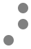
ä
ò
Numbers
Basic numbers and math are written by using the number symbol as a prefix. Texts with lots of math is usually done in a specialized braille code called Nemeth Braille.
The Number Sign signals that a number follows.

#- 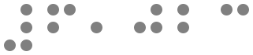
6,023
1 through 0 are letters in disguise. They use A through J, encoded as numbers 1 through 0. A number always follows the number sign (it gets confusing otherwise). Notice these on elevators.
- 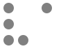
1 - 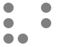
2 
3- 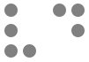
4 - 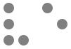
5 
6- 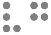
7 
8
9
0
Formatting and Punctuation
Capital and italic letters are created using special characters along with the letters described above.
The capital sign signals that a number follows. Use it once for an initial cap, twice to capitalize the whole word. Three starts an uppercase passage, with two more ending it.

↑
Cap- 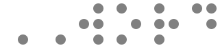
WORD
CAP IT ALL!
Italics use an italic symbol followed by a second character that indicates the length of italic style use.
- 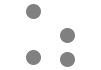
italic character - 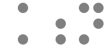
n 
italic word- 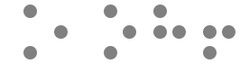
oh!
- 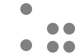
begin italic passage - 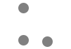
end italic passage 
as if!
Punctuate sentences by following them with these characters.

.
,
!
?
:
;
Quotes are opening and closing signs that enclose a word or words.

“
”
“ahem”
‘
’
‘true’
Parenthesis and Brackets are opening and closing signs that enclose a word or words.
- 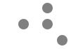
( 
)
(aside)
[
]
[edited]
Hyphens, dashes, apostrophes, asterixes and ellipses can be placed anywhere. An apostrophe is a single dot 3, a hyphen both bottom dots. Make a with an apostrophe followed by a hyphen. An asterix is an apostrophe followed by a low i. An ellipsis, just like print, is three periods in a row.

-
–
‘
*- 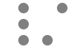
/ 
…
Currency symbols such as the dollar, British Pound, and yen are created with a currency sign (dot 4), followed by an s, e, l, or y. Hint: think of what the $, €, £, or ¥ symbols most resemble as the print letters S, E, L, and Y.
currency sign
$- 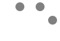
€ - 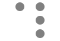
£ 
¥
Contractions
Unlike English and German Braille, French Braille only uses the abbreviations and contractions present in printed.